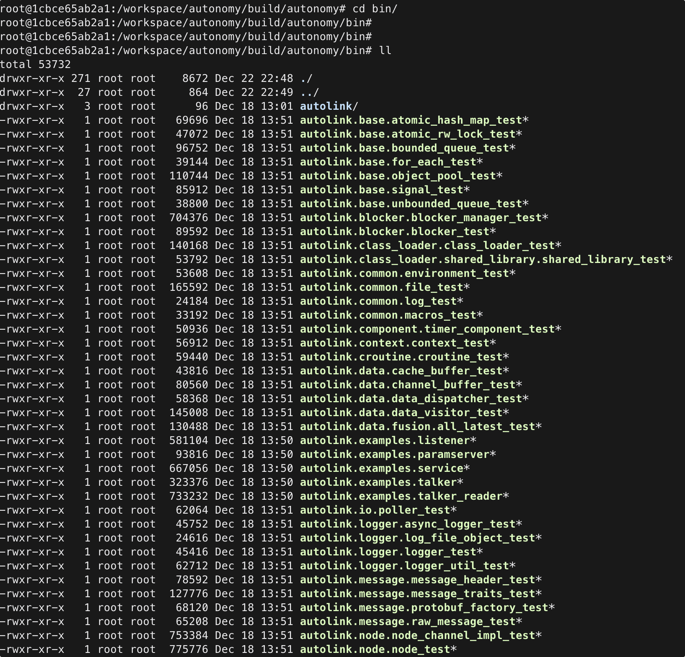

6. 编译构建
6.1 标准编译流程
cd autonomy
mkdir -p build && cd build
cmake -G Ninja ..
ninja
产物：
ls lib/libautonomy.so # 核心库
ls bin/ # 可执行文件（若启用）
6.2 CMake 选项
选项 |
默认 |
说明 |
|---|---|---|
|
ON |
gRPC Bridge 支持 |
|
ON |
单元测试（ |
|
ON |
Sphinx 文档（需 |
|
OFF |
Prometheus 指标 |
|
ON |
ONNX 推理（需找到运行时） |
示例：
cmake -G Ninja .. \
-DBUILD_GRPC=ON \
-DBUILD_TEST=ON \
-DBUILD_DOCS=OFF
ninja
6.3 获取源码
# GitHub（推荐 --recurse-submodules）
git clone --recurse-submodules https://github.com/quandy2020/autonomy.git
# Gitee（国内）
git clone https://gitee.com/quanduyong/autonomy.git
cd autonomy && git submodule update --init --recursive
6.4 运行测试
cd build
CTEST_OUTPUT_ON_FAILURE=1 ninja test
# 或
ctest --output-on-failure
6.5 构建文档
cd docs
pip install -r requirements.txt
sphinx-build -b html source build
或在 CMake 中启用 BUILD_DOCS=ON 后通过 Ninja 目标构建（若已配置）。
6.6 增量编译
cd build
ninja -j$(nproc) # 并行编译
ninja clean # 清理产物后全量重编
修改 CMakeLists.txt 或新增源文件后建议重新 cmake ..。
6.7 安装到系统（可选）
cd build
sudo ninja install # 若项目定义了 install 规则
默认开发流程直接使用 build/lib 与 build/bin，无需 install。
6.8 验证编译

# 检查核心库
file lib/libautonomy.so
# 导航离线测试（若已编译）
./bin/nav_test --help
6.9 与旧版 colcon 说明
历史文档中的 colcon build --symlink-install 针对 autonomy_ros 工作空间。当前 libautonomy 主路径为 CMake + Ninja，不依赖 colcon。若需 ROS 2 叠加层，见 04 Running。